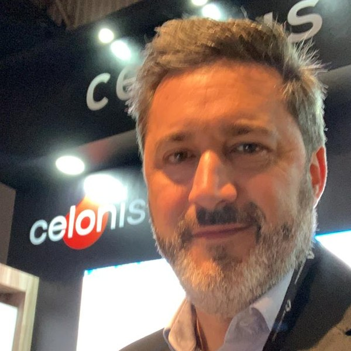

Vea cómo funciona realmente su negocio.
Process mining, BI e IA: convertimos cómo funciona su negocio en cómo mejora. Con dirección senior, del diagnóstico a los resultados.
Con 25 años dentro del mundo de los datos empresariales — incluyendo desde adentro de Celonis y Qlik.
Procesos reales, no procesos supuestos.
La mayoría de las consultoras empieza con un tablero o una presentación. Nosotros empezamos por descubrir lo que realmente ocurre dentro de sus procesos — extrayendo el proceso real de los registros de sus sistemas — para luego medirlo y aplicar IA donde de verdad genera valor.
Una cadena, no un menú.
Descubrir, medir y actuar — con dirección senior en cada proyecto, sin traspasos a equipos junior.
Revele cómo fluye el trabajo
Con Celonis y SAP Signavio extraemos el proceso real de sus sistemas y exponemos los cuellos de botella, el retrabajo y las pérdidas que cuestan tiempo y capacidad.
Convierta hallazgos en decisiones
Con Qlik y Power BI construimos los tableros con los que su equipo realmente dirige el negocio: claros, en vivo y confiables.
Prediga y automatice
Aplicamos IA donde el análisis demuestra que vale la pena: predicción, asistentes sobre sus propios datos gobernados y automatización de los cuellos de botella detectados.
La profundidad de un veterano, el foco de una boutique.
Primero el proceso
Partimos de la evidencia de cómo ocurre el trabajo — no de una herramienta ni de una presentación de transformación.
Entrega liderada por seniors
Cada proyecto lo lidera un profesional senior con décadas de experiencia enterprise, respaldado por un equipo enfocado — nunca delegado a un banco de recursos junior.
Experiencia desde adentro
Forjada desde adentro de Celonis y Qlik, a lo largo de 25 años de datos empresariales.
Resultados, no adjetivos.
Proyectos enterprise entregados de forma directa y junto a consultoras líderes.
años dentro de SAP, BI y process mining a nivel enterprise.
implementación de process mining en la nube de Celonis en Latinoamérica.
primeras implementaciones de Celonis en México y Brasil.

Hernán Azpiri
Fundador y especialista principal
aXiesData es una práctica boutique de procesos y datos liderada por Hernán Azpiri — especialista senior con más de 25 años en SAP, BI y process mining. Ex Customer Success Manager en Celonis y ex Technical Account Manager en QlikTech, ha entregado proyectos de procesos y analítica para grandes empresas en Latinoamérica, Estados Unidos y Europa. Fundó aXiesData para llevar trabajo de nivel enterprise a empresas que necesitan experiencia senior sin la estructura de las grandes consultoras. MBA, Rice University.
¿Quiere saber qué hacen realmente sus procesos?
Comience con un diagnóstico de procesos de alcance definido — un primer paso claro, sin necesidad de comprometer una plataforma.
Agendar diagnósticoHablemos de su proceso.
Cuéntenos dónde sospecha que se pierde tiempo o capacidad. Respondemos personalmente.